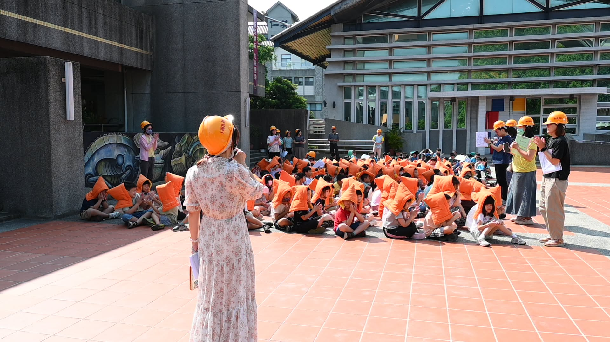
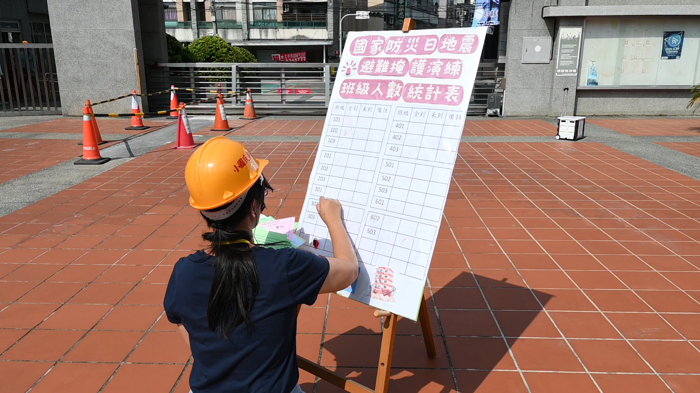

September 21st is Taiwan's National Disaster Prevention Day. At 9:21 this morning, Hsinmin Elementary ran its earthquake drill right on schedule, strengthening the whole school community's ability to respond when disaster strikes.
This year's drill was built around two added challenges:
- 情境一The usual route to the playground was blocked, with a risk of collapse — so the whole school split into two assembly points instead of one.原本通往操場的行經路線被阻斷並恐有坍塌之疑慮，將全校師生分為兩個疏散集結點進行。
- 情境二One student did not answer the roll call — too frightened to move, and unable to evacuate on their own for the moment.有一名學童點名未到（受到驚嚇腿軟、暫時無法避難疏散）。


兩個疏散集結點同時進行，並即時完成各班人數清點
- ✅Drop, Cover, Hold On — the three life-saving steps, practiced by everyone.「趴下、掩護、穩住」抗震保命三步驟演練。
- ✅Fast, orderly evacuation to the assembly points.迅速有序的疏散避難。
- ✅Roll call and damage reporting, class by class.人員清點與災情匯報。
- ✅Guiding evacuees and keeping them safe along the way.避難引導與安全防護。
Worth noting: Principal Huang Huai-Hsuan currently serves on Changhua County's disaster-prevention education advisory team, and each year works with the administrative team to design a different disaster scenario and format, leading the whole school through a realistic drill. Through steady education and practice, we keep sharpening everyone's alertness and response.
Disaster-prevention education starts young — let's protect our campus together! 💪
新民國小 921 國家地震防災演練：強化全校應變能力，守護校園安全 💪
每年的 9 月 21 日是國家防災日。在今天上午 9 點 21 分，新民國小準時進行了地震防災演練，全面提升親師生的災害應變能力。
這次演練特別設定了情境：
1. 原本通往操場的行經路線被阻斷並恐有坍塌之疑慮
2. 有一名學童點名未到（受到驚嚇腿軟、暫時無法避難疏散）
將全校師生分為兩個疏散集結點進行，以應對不同情況。
演練重點包括：
✅「趴下、掩護、穩住」抗震保命三步驟演練
✅ 迅速有序的疏散避難
✅ 人員清點與災情匯報
✅ 避難引導與安全防護
值得一提的是，懷萱校長目前擔任彰化縣防災教育輔導團員，每年都會和行政團隊精心設計不同的災害情境和形式，帶領全校師生進行實戰演練。透過持續的教育與練習，我們不斷強化大家對災害的警覺與應變能力。
防災教育，從小做起！讓我們一起攜手守護校園安全！
Tap 🔊 to listen · 點喇叭聽發音
An earthquake can happen at any time, so we practice.地震隨時可能發生，所以我們要演練。
A drill lets us practice before a real emergency.演練讓我們在真的緊急狀況前先練習。
Students evacuate quickly and in good order.學生迅速而有秩序地疏散。
Drop, cover, and shelter under a desk first.先趴下、掩護，躲在桌子底下避難。
A safety hood helps protect your head.防災頭套幫助保護你的頭部。
If one route is blocked, we use another one.如果一條路線被阻斷，我們就走另一條。
Match the word to its meaning
把英文和中文配對
Matched 配對成功：0 / 6